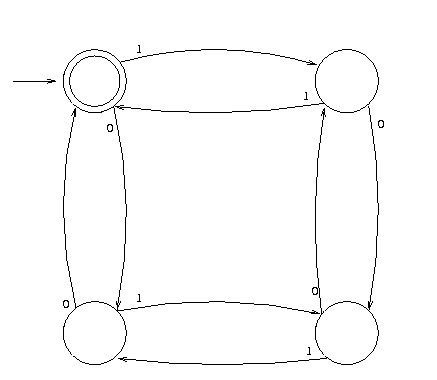

Finite State Systems
- Finite set of states.
- Set of transistions from state to state, depending on input.
- Languages recognized are regular languages (expressions).

- Perl regexes are a superset of the regular languages.
- Without backreferencing, 5.004 and before style regexes are
regular languages.
- Qualification of later regexes??
- No memory!
[Prev]
[Next]
[Index]